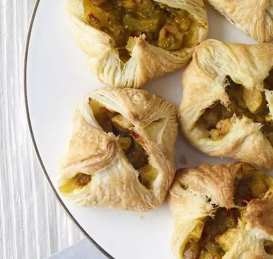

Chicken Curry Puff Recipe

Description
Spicy and savory Chicken Curry Puff recipe, ready to be your perfect appetizer or snacks to enjoy.
Referenced from: Allrecipes Chicken Curry Puff Recipe
Ingredients List
- 1 tablespoon vegetable oil
- 1/2 teaspoon ground coriander
- 1/2 teaspoon ground turmeric
- 1/2 teaspoon ground cumin
- 2 teaspoons curry powder
- 1/2 cup coconut milk or more
- 2 red onions
- 1 stalk lemon grass
- 1 red chile pepper
- 1 large russet potato
- 3/4 pound skinless, boneless chicken breast
- 1 teaspoon salt
- 1 (17.25 ounce) package frozen puff pastry
Steps
- Prepare the ingredients:
- chopped the red onions
- thinly slice the stalk lemon grass
- Roughly chop the red chile pepper
- Cut the large russet potato into dice
- Cut the chicken breast into bite-sized pices
- Thaw the frozen puff pastry
- Heat vegetable oil in a saucepan over medium-low heat
- Stir in coriander, turmeric, cumin and curry powder. Cook a few seconds until fragrant
- Pour in coconut milk, onions, lemon grass, and red pepper. Cook until vegetables are tender (about 7 minutes)
- Stir in potato and continue cooking for 12 minutes
- Add more coconut milk if the mixture become too dry
- Cook and stir until chicken and potato have absorbed most liquid
- Spread mixture onto a plate to cool
- Preheat oven to 375 degree F (190 degrees C)
- Line 2 baking sheets with parchment paper
- Unfold puff pastry
- Cut each sheet into 9 squares
- Place heaping spoonfuls of filling in the center of each square
- Gather all 4 corners of the pastry and pinch together at top, forming a small pouch
- Place each pastry on the baking sheet 1 inch apart
- Bake in the preheat oven about 22-27 minutes until golden brown
- Cool on the baking sheet for 10 minutes before removing to cool on wire rack
- Serve warm and enjoy!